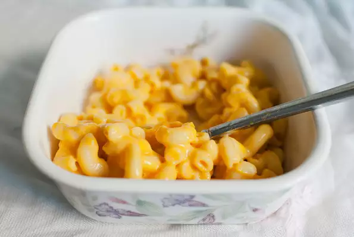

Macaroni and Cheese

Nutrition Facts
Per Serving: 630 calories; protein 26.5g; carbohydrates 55g;
fat 33.6g; cholesterol 99.6mg; sodium 777mg
Ingredients (4 servings)
- 1 (8 ounce) box elbow macaroni
- 1/4 cup butter
- 1/4 cup all-purpose flour
- 1/2 teaspoon salt
- ground black pepper to taste
- 2 cups milk
- 2 cups shredded Cheddar cheese
Steps
-
Bring a large pot of lightly salted water to a boil.
Cook elbow macaroni in the boiling water,
stirring occasionally until cooked through but firm to the bite, 8 minutes.
-
At the same time, melt butter in a saucepan over medium heat.
Add flour, salt, and pepper and stir until smooth, about 5 minutes.
Pour in milk slowly, while stirring continuously.
Continue to cook and stir until mixture is smooth and bubbling, about 5 minutes, making sure the milk doesn't burn.
- Add Cheddar cheese and stir until melted, 2 to 4 minutes.
- Drain macaroni and fold into cheese sauce until coated.